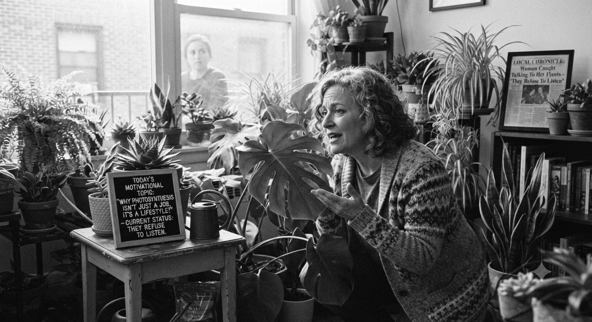
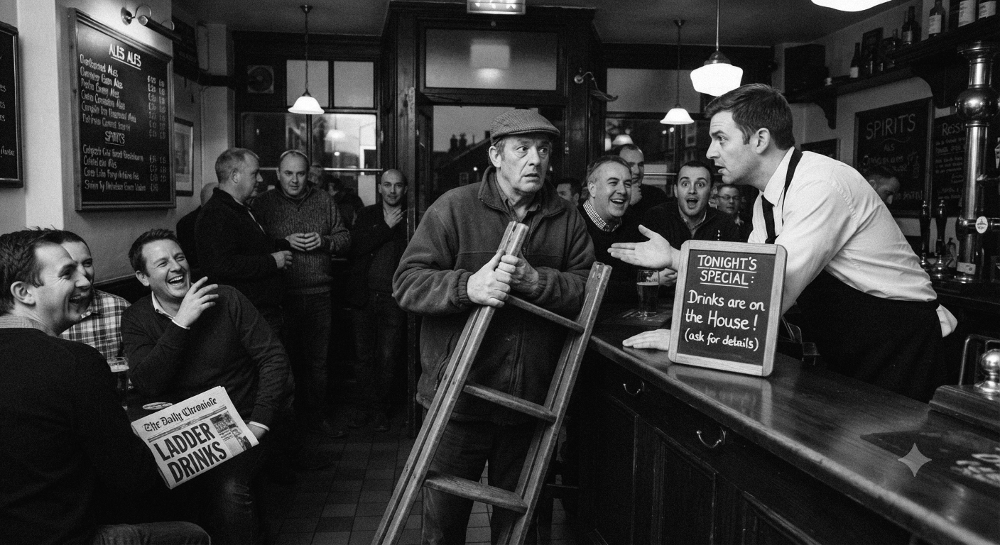
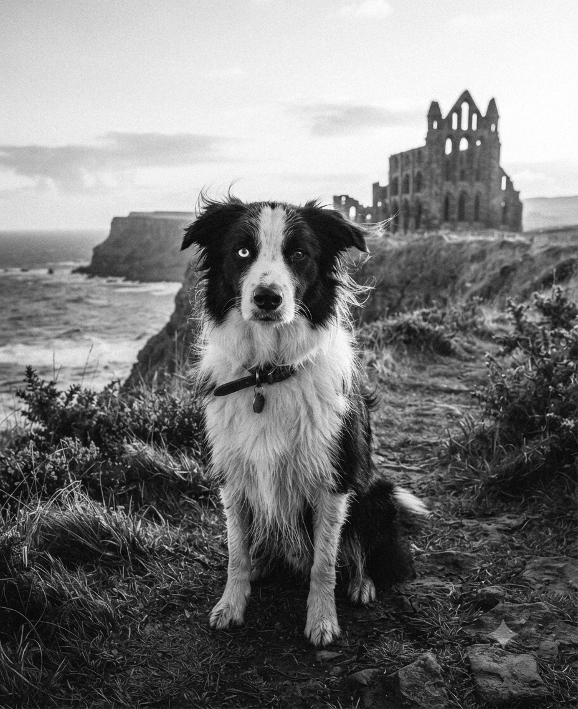

Professor Arthur Vale, 58, vanished from his Whitby home.
Professor Arthur Vale, 58, has disappeared from his Whitby home. Colleagues say he recently found evidence of a hidden map in the town's archives. "He mentioned a mysterious figure called 'The Cartographer'," said Dr. Miriam Shaw. "He became secretive, then vanished."
Vale's study was ransacked. Rare documents are missing. Police are appealing for witnesses and treating the case as a high-priority investigation. Officers are conducting extensive searches across Whitby and surrounding coastal areas. Anyone with information should contact Whitby Police immediately.
Woman Caught Talking To Her Plants "They Refuse To Listen"
By Paige Turner, Senior Features Writer

A resident admitted to giving motivational speeches to her houseplants.
A resident admitted to giving motivational speeches to her houseplants. Neighbours reported they "remain stubbornly unmotivated," despite promises of water and fertilizer bribes.
Star Bakery Sees Late Night Delivery Spike
By Bill Board, Advertising & Media Reporter
Star Bakery has become a late-night hotspot for shift workers.
A small bakery in Lincoln has unexpectedly become a late-night hotspot after extending its hours to serve shift workers and night owls. Owner Lila Grant said the idea came after noticing empty streets but growing online demand. "People wanted fresh pastries at odd hours," she explained.
Since then, Star Bakery has seen a strange spike in late-night deliveries that appear to arrive even when no orders were placed. Staff have begun joking that the bakery is "on star mode all night," with croissants allegedly disappearing faster than they can be counted.
Locals have praised the welcoming atmosphere, though some admit the bread now feels "suspiciously enthusiastic." City officials are monitoring the trend as staff continue insisting nothing unusual is happening, despite the ovens occasionally "working overtime on their own."
Local Chef Arrested for Triangular Pizza Experiment
By Chris P. Bacon, Food & Lifestyle Editor
Head chef Marco Bellini's triangular pizza caused chaos.
A local chef has been arrested after a controversial triangular pizza experiment caused unexpected chaos in a city restaurant. Head chef Marco Bellini said the idea came from a "harmless attempt to challenge traditional pizza geometry," claiming customers were "ready for evolution."
Police were called after diners reported being served slices that did not fit on any standard plate and appeared to "reject circular reality entirely." Stone‑based pizza described by one witness as "emotionally unsettling but weirdly tasty." The restaurant has since been closed for inspection, while officials investigate whether triangular food shapes pose a threat to public order or just to common sense.
Mysterious Lights Seen Over Quiet Village
By Al Beback, Field Correspondent
Residents reported strange lights appearing above the village late Tuesday evening.
Residents of a quiet Lincolnshire village were surprised after several bright lights appeared in the night sky. Witnesses described seeing three glowing objects moving slowly above the rooftops before suddenly disappearing. Local resident Daniel Moore said the lights were unlike anything he had seen before.
The unusual sight attracted dozens of curious residents, with several people capturing photographs and videos from their gardens. Local officials said there was currently no explanation for the incident. Experts are expected to examine the footage, while residents remain hopeful that the mysterious lights will return and reveal their secret.
A vintage map of Lincolnshire, circa 1890 — found in the village archives.
Man Brings Ladder To Pub — Claims "Drinks Were On The House"
By Justin Case, Breaking News Reporter

"I heard the drinks were on the house," the man explained.
A local man caused confusion last night after arriving at a pub carrying a ladder. When questioned, he calmly explained he'd heard the drinks were "on the house" and didn't want to miss out. Staff asked him to leave shortly after he tried to climb behind the bar.
Scientists Confirm Round Objects Roll More Than Square Ones
By Drew Peacock, Political Analyst
Scientists tested apples, wheels, and a very confident dinner plate.
Scientists have confirmed that round objects roll more than square ones in what experts are calling the most expensive obvious discovery in modern science. The three‑year study tested items including apples, wheels, and a very confident dinner plate that refused to cooperate on principle.
Lead researcher Dr Helen Moore said, "We suspected round things would roll, but we didn't expect them to show off about it." Square objects reportedly failed every test, with one cube described as "emotionally stable but physically disappointing." One assistant added that the wheels "kept rolling away mid‑experiment like they had somewhere better to be."
USB measurements were used to confirm rolling consistency across all test objects. The findings have sparked public outrage over funding, while officials defended the research, stating it was important to confirm what everyone already knew before school.
MISSING: HAVE YOU SEEN BAILEY?
By Anita Report, Investigative Journalist

Bailey – 3‑year‑old Border Collie, black & white, one blue eye.
Bailey – 3‑year‑old Border Collie, black & white, one blue eye. Went missing near Whitby Abbey on March 18. Very friendly, responds to name. Family is heartbroken.
🏆 Reward £200 for safe return.
📞 Call Jess: 07700 123456 or Whitby Police.
Please share – last seen near the Old Coastguard path.
A Labrador named Max has also amazed residents after traveling nearly 40 miles to reunite with his owner. The dog went missing during a camping trip but was later found waiting outside his owner's former home. Neighbours recognised Max and contacted local authorities, who scanned his microchip. Experts believe the dog followed familiar scents and landmarks. "It's incredible loyalty," said one volunteer. Max has since been safely returned and is recovering well, with his owner calling the reunion "nothing short of a miracle."
Students Build Solar Car from Scrap Materials
By Al Beback, Field Correspondent
The student team's solar‑powered car completed a 15‑mile test drive.
A group of engineering students has built a fully functioning solar‑powered car using mostly recycled materials. The project, completed over six months, aimed to highlight sustainable innovation on a budget. Team leader Aisha Khan said the biggest challenge was balancing efficiency with durability.
The car successfully completed a 15‑mile test drive, impressing local sponsors and university staff. Plans are now underway to refine the design and enter it into a national competition. The team hopes their work will inspire others to explore green technology solutions.